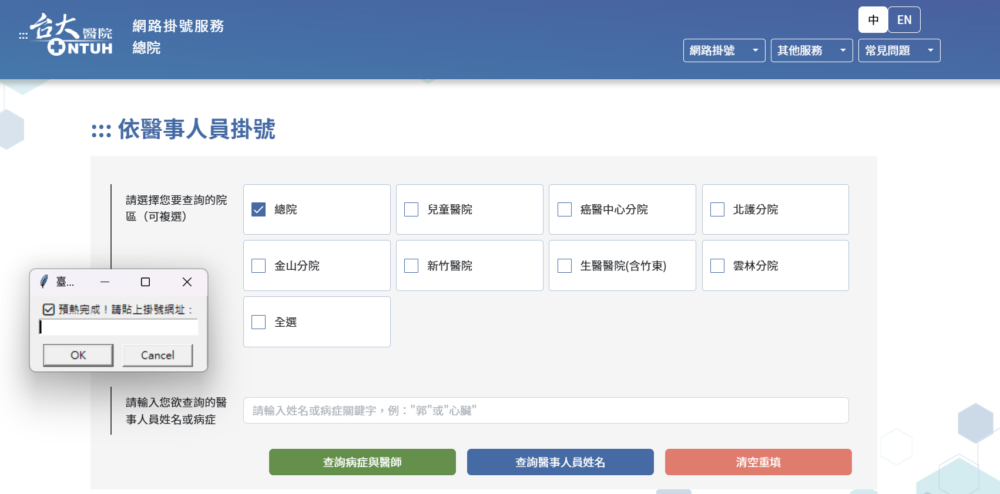

作品 · 生活工具
NTUH 快速掛號工具
2026.05 · 個人專案

FIG. 44 — 產品主畫面
關於這個作品
NTUH 快速掛號工具會先預熱 OCR 與瀏覽器，使用者貼上指定掛號頁網址後，協助完成身分證字號、生日與驗證碼的輸入並送出。
工具以桌面視窗提示操作，將需要在短時間完成的重複填表流程集中處理，瀏覽器全程以可見模式執行。
作品亮點
預先啟動 Chromium 與 OCR 模型以縮短等待時間
以桌面對話框接收指定掛號網址
自動填入身分資料並辨識頁面驗證碼
可見瀏覽器模式保留使用者確認流程